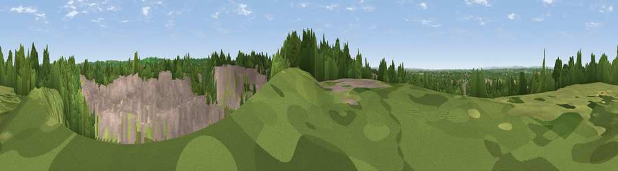

Viewpoint near Yate Rocks
#31650 in England · top 55% of its area beats it · near Yate RocksThe view, rendered

A 360° render of this exact spot computed from the terrain model, tree cover and land cover — summer colours, afternoon light, calibrated against photographs of famous viewpoints. Real trees, hedges and buildings will differ in detail.
The panorama
Grey silhouette: terrain skyline in each direction (720 bearings, Earth curvature and refraction included). Dashed green: skyline with trees (+15 m) and buildings (+8 m) as obstacles. Blue strip: how far the ground is visible on each bearing.
Where the view opens
Wedge length = distance to the farthest visible ground on that bearing (vegetation-aware). Rings at 10, 25 and 50 km.
What fills the view
30% woodland · 30% built-up · 27% grassland · 6% bare ground · 4% cropland · 3% water
Angular shares of the visible panorama (visual magnitude), not map area. Landscape diversity 0.64 (0–1 Shannon).
Key numbers
More beautiful places nearby
The staircase of upgrades: each row has a higher view potential than everything closer. Driving times are estimates from straight-line distance, calibrated against real road routing — check an actual route before setting out.
| Place | Direction | Drive | Score |
|---|---|---|---|
| Viewpoint near Yate Rocks | S · 0 km | ~1 min | 43.5 |
| Viewpoint near Horton | E · 4 km | ~10 min | 65.3 |
| Viewpoint near Horton | E · 5 km | ~11 min | 65.5 |
| Viewpoint near Horton | ENE · 5 km | ~11 min | 66.9 |
| Viewpoint near Wortley | NNE · 10 km | ~19 min | 67.8 |
| Wotton Hill | NNE · 10 km | ~19 min | 70.7 |
| Viewpoint near North Nibley | NNE · 11 km | ~21 min | 76.3 |
| Viewpoint near Stinchcombe | N · 14 km | ~25 min | 80.5 |
51.55757, -2.40275 · source: screening · position refined by local search. Computed location — check access rights before visiting.